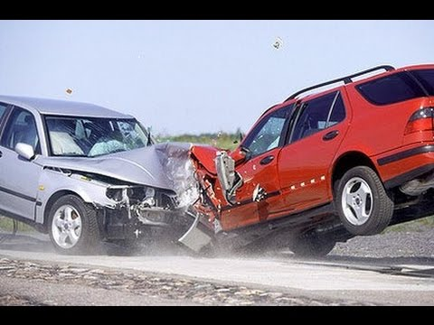

Может ли водитель избежать аварийной ситуации? Может ли водитель даже при наличии плохих дорог и недостаточного их обустройства, имея транспортное средство исправное, но пока не отвечающее лучшим мировым стандартам, управляя в обстановке, когда ему приходится встречать на своем пути других водителей и пешеходов, нарушающих требования всех норм безопасности движения, все-таки избежать попадания в аварийную ситуацию?
То есть, может ли водитель, управляя своим транспортным средством в условиях, далеких от идеальных, не совершить дорожно-транспортное происшествие, используя имеющиеся «в распоряжении» маневренные и тормозные возможности своего автомобиля и весь арсенал необходимых личных качеств и свойств. Ответ далеко не однозначен, но, к сожалению, сами водители очень не часто занимаются настоящими поисками решения проблемы. Всерьез же пытаются ответить на вопрос только специалисты дорожного движения, и здесь мы сталкиваемся даже с некоторыми теориями, пытающимися обосновать «закономерность аварийности». Рассмотрим некоторые из них.
«Теория ситуаций» выведена сторонниками философского подхода к созданию опасности в дорожном движении. Она сводится к тому, что всякое отдельное происшествие и его последствия не есть результат закономерности, а «злодейского» стечения обстоятельств, не находившихся в прямой связи между собой, а сведенных в данном месте и в данную единицу времени волей случая, породив дорожный конфликт в виде столкновения транспортных средств, наезда на пешехода или на какой-нибудь столб. И действительно, если мы схоластически начнем «подводить базу» под основы этой теории, то обнаружим, что вроде бы каждого происшествия могло бы не быть — ну, например, спустил баллон у автомобиля за квартал от места наезда, и гр. Иванов (возможная жертва) благополучно проследовал бы домой или в магазин. Или тот же потенциальный «пострадавший» внезапно вспомнил, что забыл дома выключить газ, развернулся и пошел обратно, а собиравшийся наехать на него грузовик «не обнаружил» его в месте предполагаемого наезда.
Данные о действиях участников происшествия в процессе его течения рассматриваются под углом «предположительности» действия или бездействия. «Если бы пешеход шел чуточку медленнее...», «если бы водитель ехал немножко правее...», «если бы в этом месте его обзорность не перекрыл автобус...» и т. д. и т. п.
Но при правильном, научном подходе положения «теории ситуаций» не выдерживают критики, так как детальный анализ действий участников дорожных происшествий и в доситуационный период и в процессе протекания самой аварии четко указывает на обязательное наличие ошибок, преступной самонадеянности, незнания правил, неопытности, отсутствия предвидения, неумения принимать правильные решения. Это дополняется данными об участии в происшествиях водителей, находящихся в состоянии опьянения или управляющих технически неисправными транспортными средствами. Да и исследование концентрации дорожно-транспортных происшествий показывает, что происходит она не хаотично, так сказать «где попало», а именно в местах наибольшей интенсивности движения, там, где оно хуже всего организовано, где имеются «узкие места» и неблагоприятно состояние надзора за движением.
Таким образом, явно складывается мнение о порочности «теории ситуаций», так как научный подход к результатам исследования аварийности указывает на железную закономерность в создании обстановки дорожно-транспортного происшествия, на прямую зависимость аварии от совершенно конкретных условий и обстоятельств, создавшихся задолго до возникновения ситуации на дороге.
Источник: http://www.gazu.ru/
Еще немного на тему: " Если Вы попали в ДТП " ...